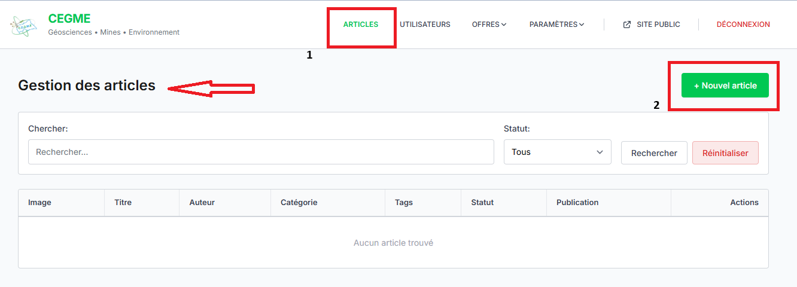
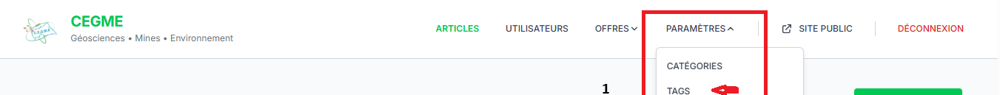
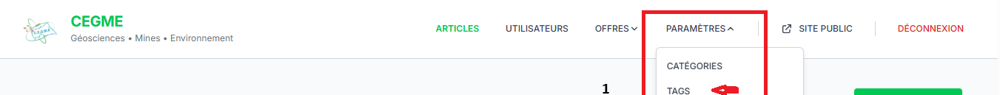

2. Interface Publique
Le site public permet aux visiteurs de consulter vos services, vos réalisations et les appels d'offres en cours.

Bienvenue dans le guide d'utilisation de la plateforme CEGME. Ce document vous aidera à gérer les contenus et les processus de veille automatique.
CEGME est une solution intégrée pour la gestion de l'expertise géoscientifique.
Le site public permet aux visiteurs de consulter vos services, vos réalisations et les appels d'offres en cours.
Accédez à l'onglet "Posts" pour gérer vos articles d'actualité.
Le système de scraping est automatisé mais peut être piloté manuellement.

Configurez vos Pôles d'activité et vos Mots-clés pour un filtrage précis des opportunités.

L'administrateur peut configurer les accès et les paramètres globaux de l'application.
 

© 2026 Cabinet CEGME - Tous droits réservés.